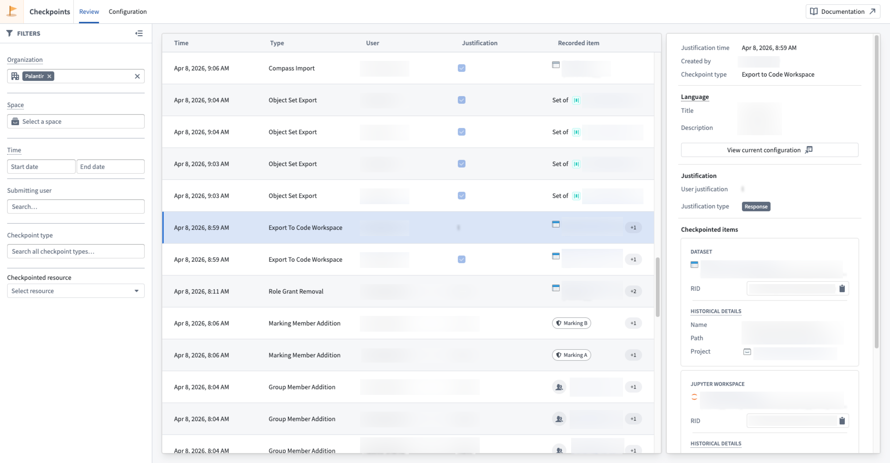
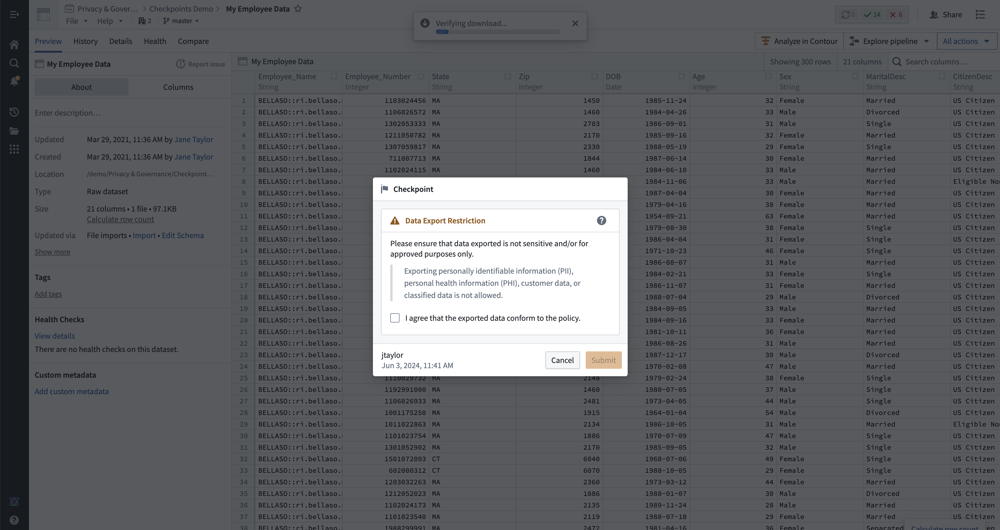

Checkpoints is a data governance tool that supports purpose justification and auditability. Checkpoints allows you to interrupt potentially sensitive user interactions with prompts requesting justification for the activity. These justifications can then be reviewed in the platform to ensure adherence to data protection, governance, and compliance policies.

The above screenshot uses notional data.
A checkpoint is a prompt that asks a user to provide a justification for an interaction in Foundry. The userâs justification is recorded and made available for later review to administrator users in the Checkpoints application. Users can also always review historical justifications for their own interactions in the Checkpoints application.

The above screenshot uses notional data.
The prompt in each checkpoint and the type of justification required is set in a checkpoint configuration. Once submitted, each checkpoint produces a checkpoint record that contains the contextual data associated with an interaction governed by a checkpoint. This includes the timestamp of the interaction, the user who performed the interaction, the justification provided in the checkpoint, the checkpoint type, and any data (resources, objects, and Markings, for example) associated with the interaction.
The Checkpoints application allows users to configure checkpoints and review checkpoint records. All users can use the Checkpoints application to review checkpoint records that they have submitted. The Checkpoints application can be accessed in the navigation panel in the Data Governance category.
Users can also configure checkpoints or review checkpoint records for entire Organizations or spaces.